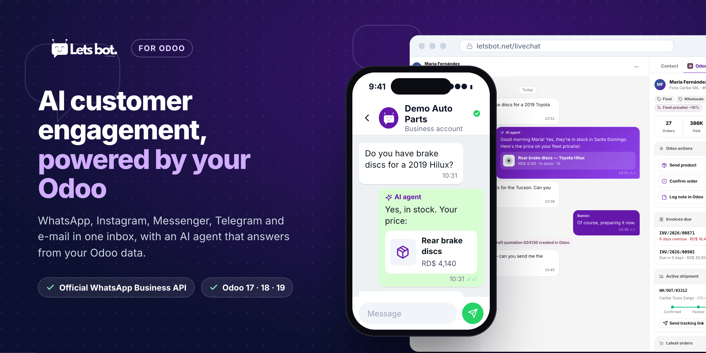
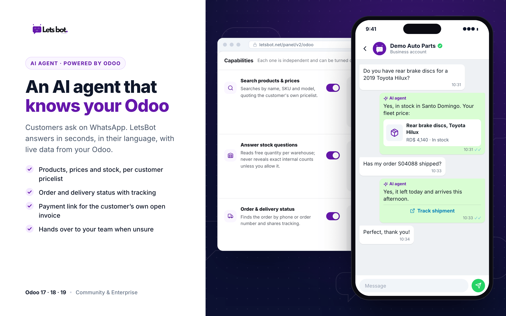
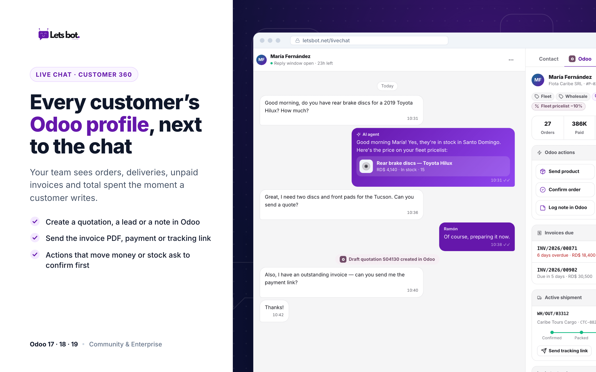
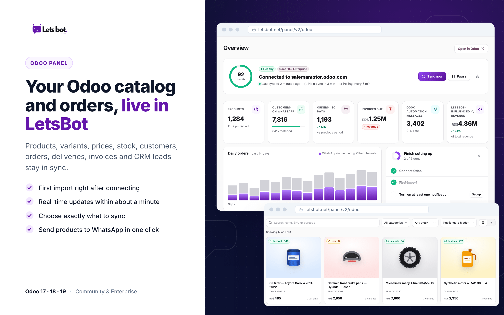
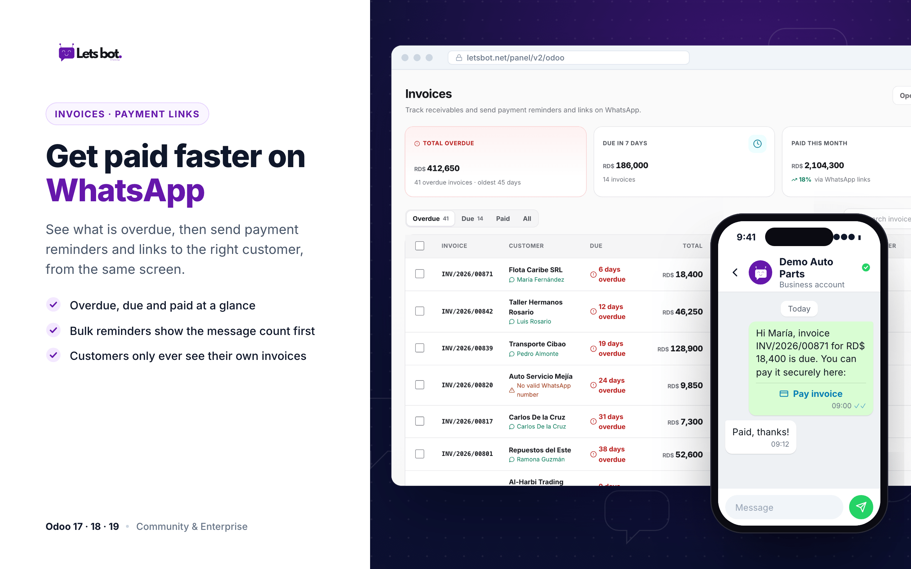
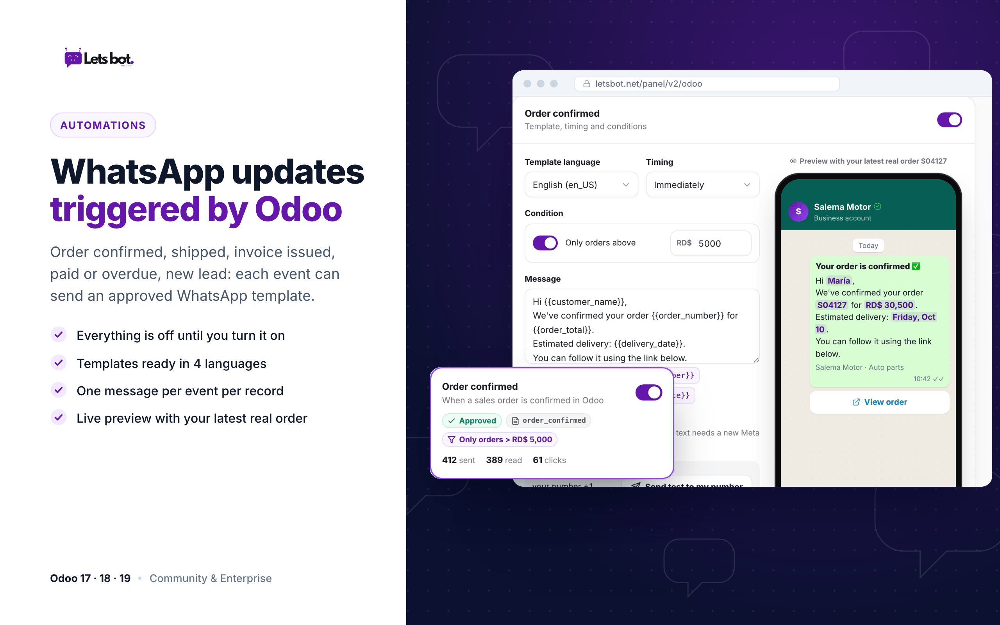
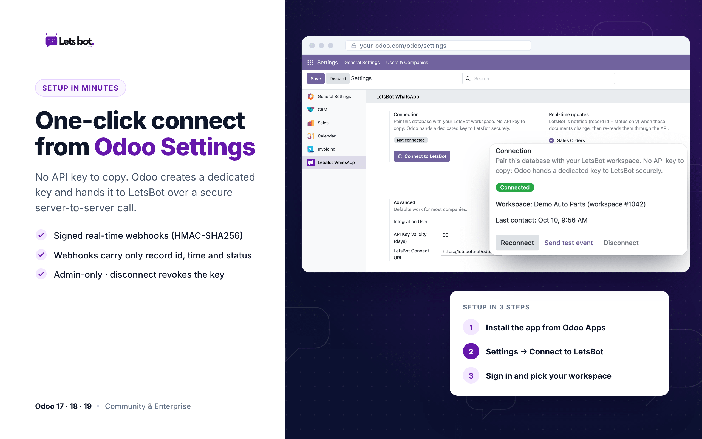
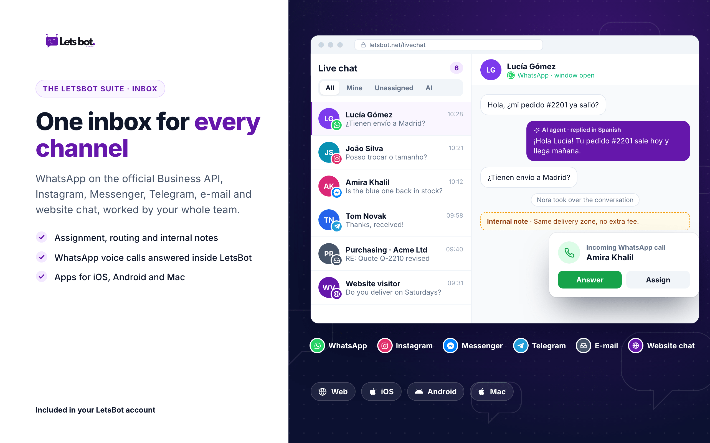
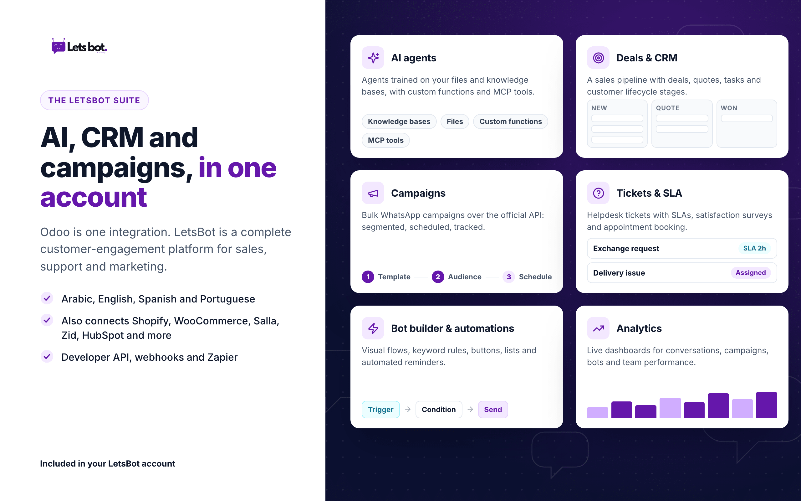

LetsBot connects Odoo to an AI agent and a shared team inbox for WhatsApp, Instagram, Messenger, Telegram and e-mail. Customers get instant answers about products, stock, orders and invoices, straight from your Odoo data.
No API key to copy and paste. Odoo creates a dedicated key and hands it to LetsBot over a secure server-to-server call.
Built for teams that sell and support on WhatsApp and run their business on Odoo.

Customers ask on WhatsApp and get an accurate answer in seconds, in their own language.

When a customer writes, your agent sees their Odoo profile: recent orders, delivery status, unpaid invoices and total spent.

Products and variants, prices, stock, customers, sales orders, deliveries, invoices and CRM leads. You choose what to sync.

See overdue, due and paid invoices, then send reminders with payment links to the right customers.

Order confirmed, order shipped, invoice issued, invoice paid, invoice overdue, new lead and lead stage changed.

The app adds a LetsBot WhatsApp page to Settings with the connection status, real-time update switches and a test button.
Odoo is one integration. LetsBot is a complete AI customer-engagement platform for sales, support and marketing.


These features are part of the LetsBot service (letsbot.net) and depend on your LetsBot plan. The Odoo app connects your database to it.
| Odoo versions | 17.0, 18.0 and 19.0 |
| Editions | Community and Enterprise |
| Hosting | Odoo.sh and on-premise (self-hosted) |
| Odoo Online (SaaS) | Third-party apps cannot be installed there. Connect from LetsBot with an Odoo API key instead (the Odoo Online Custom plan is needed for API access). |
| Dependencies | base_setup and mail only. Works with Sales, Invoicing, Inventory and CRM when installed. |
| Requirements | A LetsBot account and outgoing HTTPS from your Odoo server. |
Install the app, press Connect to LetsBot in Settings, and your AI agent starts answering from Odoo data.
Contact support@letsbot.netWebsite: letsbot.net · Human support in Arabic and English